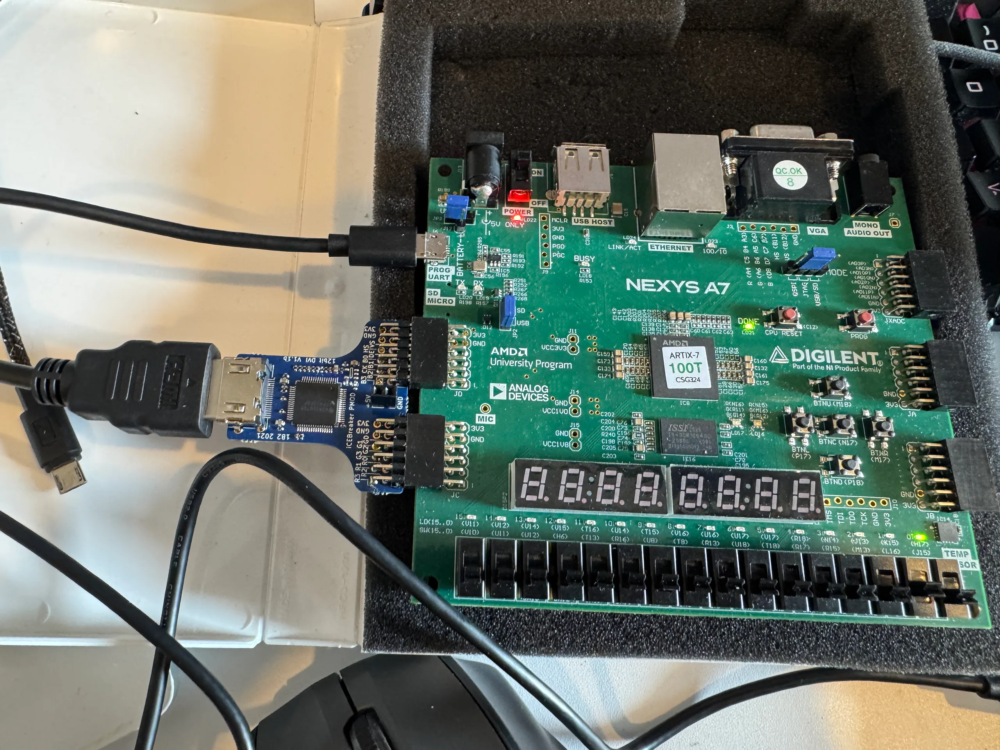

Dispatch · FPGA
Pixels on the glass
The 12-bit DVI PMOD is soldered, flashed, and throwing color bars on HDMI. Abstract logic finally has a screen.
The PMOD 12-bit DVI V1.1b module finally arrived, and I went straight to work soldering the pins. This interface is designed to make VGA and HDMI output straightforward directly from the FPGA — bypassing those passive adapters that were giving me trouble earlier.
After soldering, I flashed a quick test pattern. It immediately worked: pure red, green, blue, and gray bars right up on the screen via HDMI.

Video peripheral is working again, so I can get back to HDMI testing. Next step is TomatoOS and the other GUI stuff already in the architecture. Color bars on a monitor beat staring at waveforms.
Earlier: the PMOD pivot when VGA adapters failed. Toolchain next: open-source synthesis on the Mac.